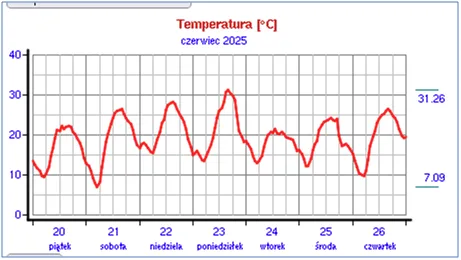
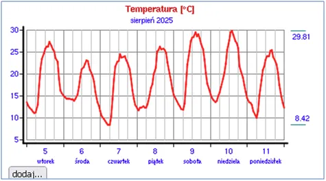
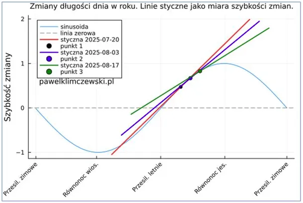

Czy “ostatnie pokolenie” przekaże swym następcom, co to jest całka i amplituda?
W języku polskim pojęcia matematyczne często mają swoje trafne nazwy. Nie wszystkie zostały spolszczone, wiele terminów mamy z łaciny, a w geometrii głównie z greki, np. sinus, czy elleipsis, czyli elipsa. Całka po ludzku to powierzchnia pola pod krzywą, pod linią funkcji. "Całe to, co jest pod funkcją w czasie" to nasza całka, czyli ilość energii słonecznej w ciągu doby jest proporcjonalna do pola pod wykresem temperatury. Gdy zestawimy wykresy z czerwca i sierpnia widzimy wyraźnie, że po południu temperatura szybciej spada i pole pod krzywą jest mniejsze, noce dłuższe a poranki chłodniejsze.

Wśród studentów jest taki dowcip, że na pytanie, co to jest różniczka, głupi Jasio odpowiada, że jest to "wyniczek z odejmowanka". Klasa rży, a pan profesor mówi głośno, "tak Jasio, to prawie prawda!". Polscy matematycy łacińskie pojęcie differentia Gottfrieda Leibniza, spolszczyli.

Istotą różniczki jest obliczanie zmiany funkcji, gdy jej argument dąży do zera, w nieskończenie krótkiej chwili. Po co dążyć do zera w języku potocznym opisać się łatwo nie da, ale próbowałem to zrobić rysując styczne do krzywej sinusoidy. Gdy policzymy funkcję pochodną w danym punkcie do krzywej możemy zrozumieć, co by się działo z funkcją, gdyby od tego momentu stała się funkcją liniową, której obrazem jest linia prosta.

Tak liczymy tor kamienia wystrzelonego z wirującej procy. Stety, niestety nie udało się spolszczyć całej naukowej nomenklatury i mamy łacińską amplitudę, czyli polską "rozległość". Oznacza ona jak bardzo funkcja się zmienia, jaka jest odległość między jej górą a dołem. Im dalej od środka lata dobowa amplituda temperatur będzie rosnąć, co odczuwamy teoretycznie od Anki, gdy bywają zimne wieczory i ranki. Nauka jest intuicyjna i prosta, ludzki rozum jedyny na planecie potrafi zbierać i rozwijać dorobek poprzednich dokonań. Człowiek jest na Ziemi koroną stworzenia i bardzo przykre jest, gdy obserwujemy, że wielu młodych ludzi swój mózg wykorzystuje, aby głosić coś przeciwnego. Ostatnie pokolenie częściowo wyrośnie z wieku buntu i czasem założy rodzinę, ale czy swym dzieciom przekaże coś wartościowego, gdy swoje pierwsze 25 lat straciło na poznawanie czystego kłamstwa i iluzji.
Paweł Klimczewski